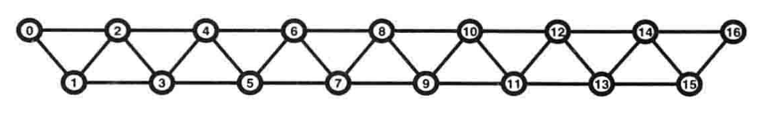
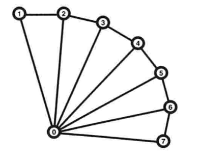

繪製
opengl 提供了繪製圖元的形式(點 線 三角形) 需要將 物體分解為 圖元 點 GL_POINTS 線 GL_LINES 條帶線 GL_LINE_STRIP 循環線 GL_LINE_LOOP 獨立三角形 GL_TRIANGLES 三角形條帶 GL_TRIANGLE_STRIP 三角形扇面 GL_TRIANGLE_FAN
點
點 可以通過單一頂點表示
一個點 是一個四維齊次指標值
(實際上不存在 面積
opengl 使用一個四邊形區域來 模擬
四邊形的 邊長 為點的大小 默認為 1.0)
使用
void glPointSize()
或在 頂點 細分 幾何 著色器中 向內置的 gl_PointSize 寫入值
(需要啟用 GL_PROGRAM_POINT_SIZE 否則 著色器會忽略gl_PointSize)
改變 大小
點精靈
opengl 片元 著色器 中提供了一個 特殊內置變量 gl_PointCoord gl_PointCoord 包含了當前 片元 在點區域內的 坐標信息 將 gl_PointCoord 作為輸入紋理坐標 可以使用位圖和紋理 替代簡單的 方塊顏色 及那個結果 進行 alpha 融合或 直接拋棄某些 片元(discard) 可以創建不同形狀的 點精靈 對象
線
opengl 中的線 表示一條線段 而非數學上的方向向量 (可以使用 一對 頂點 表示) 閉合的多段線 叫做 循環線(line loop) 開放的多段線(沒有首尾閉合) 叫做 條帶線(line strip) 使用 void glLineWidth(GLfloat width) 設置 線寬 (沒提供 著色器 設置 變量)
三角形
三角形 由三個頂點 集合組成 當分片渲染多個三角形 時 每個都與其它完全獨立 三角形條帶(triangle strip) 前三個頂點構成第一個 三角形 後續頂點與之前的三角形 後兩個頂點構造新 三角形  三角形扇面(triangle fan) 第一個 頂點 作為共享 頂點 之後沒兩個頂點和共享頂點 構成三角形 
多邊形
默認 情況下 多邊形 的正/背面 是喲哦那個 相同方式 繪製 GL_FILL 使用 void glPolygonMode(GLenum face,GLenum mode) 修改 face 必須 為 GL_FRONT_AND_BACK mode 為 GL_POINT GL_LINE GL_FILL 多邊形 正面 頂點 在屏幕上 應該是 逆時針排列的 使用 void glFrontFace(GLenum mode) 修改此判定 mode 取值 GL_CCW 逆時針為正面(默認) GL_CW 順時針為正面 對於 一個由不透明 且方向一致的 多邊形組成的 完全封閉模型來說 它的所有背面 多邊形是 不可見的 如果在模型之內 只有背面多邊形 可見 使用 void glCullFace(GLenum mode) 讓opengl 直接拋棄 不可見 多邊形 (需要 glEnable(GL_CULL_FACE) 開啟剪裁) mode 取值 GL_FRONT 剪裁 正面 GL_BACK 剪裁 背面 GL_FRONT_AND_BACK 剪裁 正面和背面